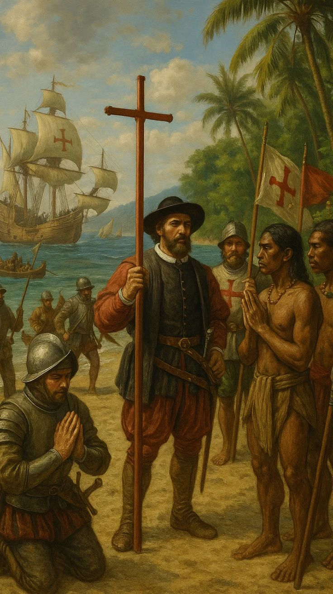
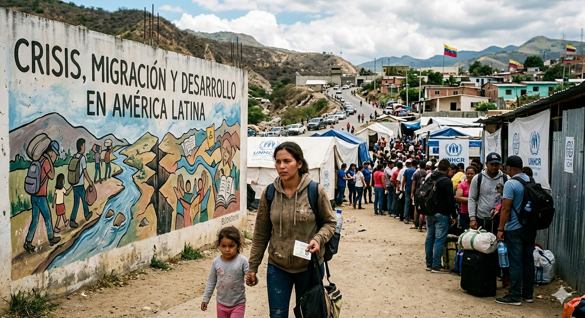
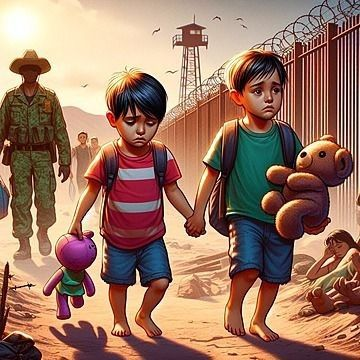
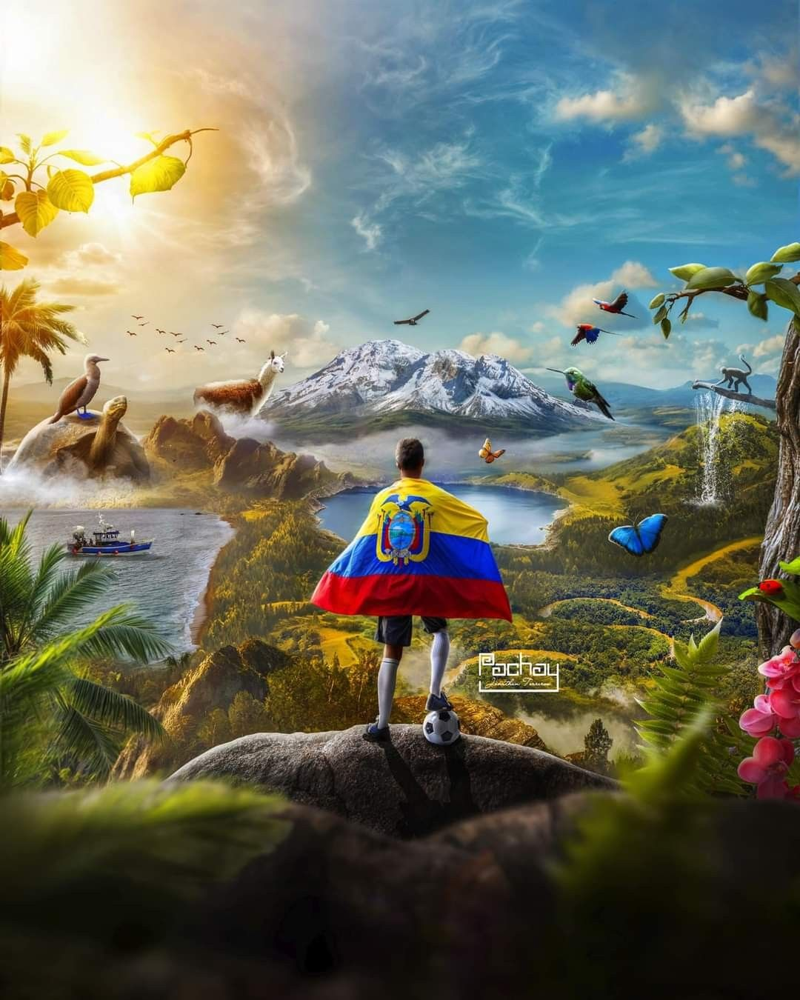

Tema 1
Los movimientos sociales y las revoluciones en Latinoamérica: de la resistencia indígena a la lucha por la igualdad
Desde el inicio del período colonial (siglos XV–XIX), se establecieron estructuras económicas y sociales basadas en la concentración de la riqueza y la exclusión de los pueblos indígenas y otros grupos sociales. Estas desigualdades se mantuvieron e incluso se reforzaron durante la formación de los Estados nacionales, generando tensiones que, con el tiempo, dieron origen a diversos movimientos de resistencia y transformación social.

Contexto histórico
Representación del inicio del período colonial, etapa que marcó profundas desigualdades sociales que más tarde darían origen a movimientos de resistencia y revoluciones en América Latina.
Período colonial, siglos XV–XIX.Estas luchas provocaron importantes transformaciones en la región, influyendo en procesos como la independencia, las reformas agrarias y la ampliación de derechos ciudadanos. Aunque muchos de estos procesos fueron conflictivos, dejaron como legado una mayor participación popular y la búsqueda constante de sociedades más justas e inclusivas.
Además, los movimientos sociales no solo buscaron cambios inmediatos, sino que también promovieron nuevas formas de participación política, fortalecieron la conciencia colectiva y consolidaron la idea de que la ciudadanía tiene el derecho de exigir justicia, igualdad y respeto a los derechos humanos. En la actualidad, estos movimientos continúan desempeñando un papel fundamental en la construcción de democracias más inclusivas en América Latina.
🏛️Orígenes, luchas y transformaciones sociales en Latinoamérica
Estos procesos sociales se han manifestado a través de diversas formas de organización y lucha, entre las que destacan:
⚖ Lucha contra la desigualdad
Acciones sociales orientadas a reducir brechas económicas y sociales.
🌾 Participación social
Intervención activa de campesinos, pueblos indígenas y trabajadores.
✊ Organización colectiva
Movilización social mediante protestas y estructuras comunitarias.
📜 Justicia y derechos
Búsqueda de cambios estructurales y reconocimiento de derechos.
Reflexiona:
- ¿Por qué crees que los movimientos sociales siguen existiendo en la actualidad?
- ¿Conoces algún movimiento social en Ecuador? ¿Cuál es su objetivo?
- Si hubieras vivido en esa época, ¿qué injusticia te habría motivado a participar?
Tema 2
Crisis, migración y desarrollo en América Latina
En América Latina, las crisis económicas, sociales y políticas han impulsado a muchas personas a migrar en busca de mejores oportunidades de vida. Factores como el desempleo, la pobreza, la inseguridad y el cambio climático influyen en esta decisión.
Migrantes en América Latina enfrentando procesos de desplazamiento y búsqueda de oportunidades.

La migración impacta el desarrollo de los países. Por un lado, las remesas ayudan a muchas familias; por otro, genera desafíos como la pérdida de mano de obra y la presión sobre los servicios públicos. Por ello, los Estados deben promover políticas que reduzcan las desigualdades y fomenten un desarrollo sostenible. Además, es importante entender que la migración no solo tiene efectos económicos, sino también sociales y culturales. Cuando las personas migran, llevan consigo sus costumbres, tradiciones e identidad, lo que enriquece la diversidad de los países de destino. Sin embargo, también pueden enfrentar dificultades como la discriminación, la adaptación a un nuevo idioma o a diferentes normas sociales

En muchos países de América Latina, la falta de oportunidades en el campo ha impulsado a numerosas personas a migrar hacia las ciudades en busca de empleo, educación y mejores condiciones de vida. Este proceso, conocido como migración interna, ha provocado el crecimiento acelerado de las zonas urbanas y el abandono progresivo de algunas áreas rurales, generando nuevos desafíos para el desarrollo de la región.
Características de la Migración en América Latina
La migración en América Latina refleja cambios sociales y económicos que transforman la vida de millones de personas.
-
🚶
Movilidad
Se refiere al desplazamiento de personas dentro de un mismo país o hacia otros países en busca de mejores condiciones de vida.
-
✋
Desplazamiento
Es el movimiento de personas desde su lugar de origen hacia otro territorio, ya sea dentro del mismo país o hacia el extranjero.
-
🧠
Migración
Proceso en el que las personas se trasladan temporal o permanentemente, dentro del país o al extranjero, por motivos económicos, sociales, políticos o ambientales.
Tema 3
Ecuador en el siglo XXI: un país en transformación
Durante el siglo XXI, Ecuador ha experimentado importantes transformaciones en su estructura política, económica y social, influenciadas por procesos de modernización, participación ciudadana y búsqueda de mayor inclusión social. Estos cambios han estado acompañados de desafíos como la desigualdad, la migración, la sostenibilidad ambiental y la adaptación a un mundo globalizado, lo que ha impulsado al país a redefinir su modelo de desarrollo y su identidad nacional.

En el siglo XXI, Ecuador ha atravesado un proceso continuo de transformación marcado por cambios políticos, sociales y económicos que han influido directamente en la vida de la población. El país ha buscado fortalecer la participación ciudadana, ampliar derechos y modernizar sus instituciones, al mismo tiempo que enfrenta desafíos persistentes como la desigualdad social, la migración, la inseguridad y la necesidad de un desarrollo sostenible. Estos procesos reflejan la búsqueda de un equilibrio entre crecimiento económico, justicia social y preservación del medio ambiente, en un contexto nacional e internacional cada vez más complejo.
Cronología del Ecuador en el siglo XXI
En el año 2000, Ecuador inició el siglo XXI enfrentando una profunda crisis económica que llevó a la dolarización, una medida clave para estabilizar la economía y controlar la inflación. Este hecho marcó un punto de inflexión en la historia del país, influyendo en el sistema financiero, el comercio y la vida cotidiana de la población, así como en los procesos de migración hacia otros países.
Entre 2007 y 2017, el país vivió un periodo de importantes transformaciones políticas y sociales, destacándose la aprobación de la Constitución de 2008, que amplió derechos y fortaleció la participación ciudadana. Durante estos años se impulsaron inversiones en educación, salud e infraestructura, buscando reducir la pobreza y promover un mayor rol del Estado en el desarrollo nacional.
Desde 2020 hasta la actualidad, Ecuador ha enfrentado nuevos y complejos desafíos, como el impacto de la pandemia del COVID-19, el aumento de la inseguridad, la migración y la necesidad de un desarrollo sostenible. Estos procesos reflejan que el país continúa en constante transformación, buscando estabilidad, crecimiento económico y mejores condiciones de vida para su población.
📜 Etapas del Ecuador en el siglo XXI
Selecciona una etapa
Haz clic en una etapa para ver la información aquí.